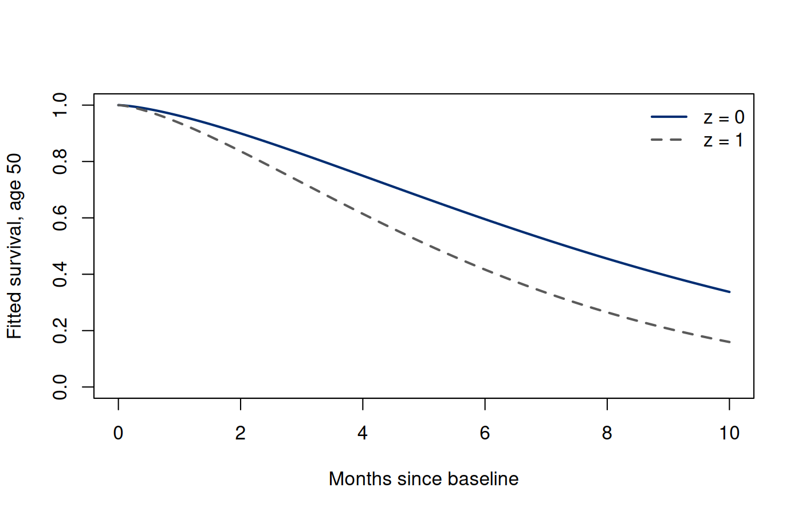
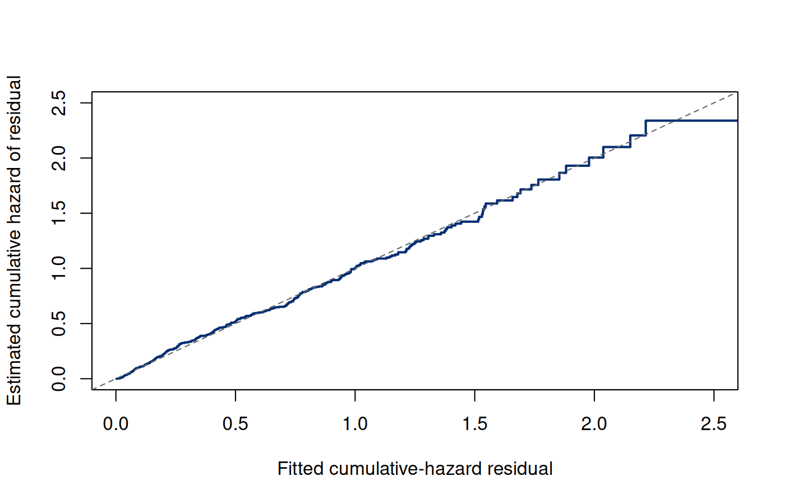

Chapter 6. Parametric survival regression
6.1 Which part of a distribution should a covariate change?
The exponential analysis in Chapter 5 treated all people as having one constant hazard. Biomedical populations rarely justify that restriction. Baseline age, a measured exposure, or a treatment assignment may distinguish event-time distributions; the hazard may also change as follow-up proceeds. Regression connects a specified change in characteristics to a specified change in the distribution. Choosing that connection is part of the scientific argument, before estimation begins.
Our target is conditional survival , or a contrast between two covariate profiles at a supported horizon. Let be a column vector of fixed baseline measurements; counts predictors and excludes an intercept. An accelerated failure-time model shifts a distribution on the log-time scale. A proportional-hazards model multiplies an instantaneous event rate. Neither wording alone identifies a causal effect. A causal interpretation would additionally require an appropriate design, a well-defined intervention, and assumptions about confounding and selection. Here indexes an association in an explicitly invented cohort.
We retain independent subjects and conditional independent right censoring, , with a parameter-distinct observation mechanism. We also assume the regression family correctly specifies the conditional event distribution and that the fitted covariate contrasts have data support. The likelihood remains (5.1), now using subject-specific and . A new family changes these functions, not the observation statements. Exact failures and right censoring must still contribute different factors.
6.2 A time ratio from a distributional shift
Write an accelerated failure-time model as (6.1) where the distribution of does not change with . The symbols denote log-time coefficients. Later denotes log-hazard coefficients; keeping these distinct prevents sign and scale mistakes. The error need not have mean zero. Its specified location is absorbed into , and the Weibull error used below does not have zero mean under its conventional parameterization.
If has the distribution at , then has the distribution of . Consequently (6.2) for any quantile that exists, where is a locally defined quantile probability. A one-unit increase in multiplies all event-time quantiles by , holding other variables fixed. A positive coefficient lengthens time. Some conventions call an acceleration factor because it multiplies the clock argument; we will report the time ratio explicitly rather than rely on that potentially ambiguous phrase.
Differentiating the shifted survival function gives (6.3) There is both a vertical multiplier and a shift in the time argument. Unless the baseline hazard has a special form, their combination is not a constant hazard ratio. For example, a lognormal time distribution yields an AFT model but generally nonproportional hazards. Exponentiating an AFT coefficient therefore produces a time ratio, not a hazard ratio.
6.3 Weibull regression joins the two scales
Choose a minimum extreme-value error with survival and density for a real argument . Here is Euler’s exponential base; is a possible error value. Transforming (6.1) gives (6.4) so is the Weibull scale in time units and is the shape. At that scale, survival equals , rather than one-half. The median is . Confusing the scale with a median would give an incorrect summary even if every fitted coefficient were correct.
The cumulative hazard and hazard follow directly: (6.5) The reference cumulative hazard is . Thus this family also has proportional hazards, (6.6) A negative log-time coefficient gives a positive log-hazard coefficient. The hazard ratio for one unit of is . The shape is common across profiles: allowing profile-specific shape would generally remove this PH interpretation. Shape recovers exponential regression, means increasing hazards, and means decreasing hazards. This monotonic shape family cannot represent every biomedical hazard pattern.
6.4 The Weibull likelihood with censored observations
For observed with , substitute (6.5) into : (6.7) where , is a -component column of slopes, and is the intercept. Every record contributes its cumulative hazard; only failures contribute the log hazard. This is the regression version of events and exposure, with transformed exposure depending on the shape and covariates.
For clarity, differentiate with respect to the location coefficients while holding fixed. In the score and information subscripts below, labels the full location block: the intercept and slopes. Thus has components. This local block notation keeps the intercept in the likelihood derivatives; it does not change the -slope convention for in the AFT model. The location score is a -column, its information is , and the full location-and-shape parameter has coordinates. If , then (6.8) The full information also contains the shape parameter and its cross terms. Using only the displayed location block while pretending that estimated shape is known would omit uncertainty. We optimize jointly and use the full likelihood curvature. At the maximum, failures are balanced against modeled cumulative exposure in covariate-weighted score equations.
To make the nuisance-shape calculation explicit, put , so that . The remaining score and information blocks in the parameterization are (6.9) (6.10) The first term in vanishes at an interior maximum that solves the location score equations; away from that maximum it must be kept. The location covariance block is approximately (6.11) The subtracted term represents changes in location that can be partly accommodated by changing shape. This is the same nuisance-parameter adjustment used in likelihood inference in the inference book. It provides a concrete reason to use the full fitted covariance matrix.
6.4.1 From first principles
The two computational routes use the same 600 records, covariate
matrix, conditional survival target, and censoring likelihood.
Section 6.5 specifies how these records are
generated; the complete R example creates dat before either
fit. Reading the objective term by term connects the code to Equation (6.7): a failure
supplies log hazard, and every record supplies negative cumulative
hazard.
Run the complete R example
Dependencies: base R, survival. This complete block includes the data, setup and calculations. Run it in a fresh R session. Short code excerpts above explain individual steps; this block supplies their shared setup. Figures and tables are written to a temporary directory.
Complete R example
# Complete R example. Synthetic data; no external files are required.
local({
previous.directory <- getwd()
example.directory <- tempfile("biomedical-example-")
dir.create(example.directory)
setwd(example.directory)
on.exit(setwd(previous.directory))
dir.create("generated",showWarnings=FALSE)
# Synthetic baseline-covariate survival cohort.
options(digits=10)
library(survival)
dir.create("results",showWarnings=FALSE); dir.create("figures",showWarnings=FALSE)
set.seed(675408)
n <- 600L
z <- rbinom(n,1,.45); age <- runif(n,35,70); age10 <- (age-50)/10
shape.true <- 1.6
eta.true <- log(9) - .35*z - .20*age10
T <- exp(eta.true)*(-log(runif(n)))^(1/shape.true)
C <- pmin(rexp(n,.035),10)
dat <- data.frame(id=seq_len(n),z=z,age=age,age10=age10,
time=pmin(T,C),status=as.integer(T<=C),event.time=T,censor.time=C)
write.csv(dat,"results/ch08-cohort.csv",row.names=FALSE)
Z <- model.matrix(~z+age10,data=dat)
# Weibull AFT: log(T)=eta+sigma*epsilon; S_epsilon(e)=exp(-exp(e)).
# Last parameter is log(sigma), so scale remains positive.
weibull.loglik <- function(par) {
eta <- drop(Z %*% par[1:3]); sigma <- exp(par[4]); k <- 1/sigma
q <- k*(log(dat$time)-eta)
sum(dat$status*(log(k)-k*eta+(k-1)*log(dat$time))-exp(q))
}
weib <- survreg(Surv(time,status)~z+age10,data=dat,dist="weibull")
expon <- survreg(Surv(time,status)~z+age10,data=dat,dist="exponential")
lnorm <- survreg(Surv(time,status)~z+age10,data=dat,dist="lognormal")
llogis <- survreg(Surv(time,status)~z+age10,data=dat,dist="loglogistic")
initial <- c(log(median(dat$time)),0,0,0)
manual <- optim(initial,function(p)-weibull.loglik(p),method="BFGS",
hessian=TRUE,control=list(reltol=1e-12,maxit=1000))
package.par <- c(coef(weib),log(weib$scale))
# Both routes maximize the same censored likelihood in identical coordinates.
comparison <- data.frame(
quantity=c("Intercept gamma0","Group gammaZ","Age gammaA","Log error scale",
"Weibull shape","Maximized log likelihood"),
first.principles=c(manual$par,exp(-manual$par[4]),weibull.loglik(manual$par)),
standard.workflow=c(package.par,1/weib$scale,as.numeric(logLik(weib))))
write.csv(comparison,"results/ch08-computational-routes.csv",row.names=FALSE)
writeLines(c("\\begin{tabular}{lrr}\\toprule",
"Quantity & Manual optimizer & \\texttt{survreg}\\\\\\midrule",
vapply(seq_len(nrow(comparison)),function(i) sprintf("%s & %.6f & %.6f\\\\",
c("Intercept $\\gamma_0$","Group $\\gamma_Z$","Age $\\gamma_A$","Log error scale",
"Weibull shape","Maximized log likelihood")[i],comparison$first.principles[i],comparison$standard.workflow[i]),""),
"\\bottomrule\\end{tabular}"),"results/ch08-computational-routes.tex")
write.csv(data.frame(package=c("R","survival"),
version=c(as.character(getRversion()),as.character(packageVersion("survival")))),
"results/ch08-package-versions.csv",row.names=FALSE)
stopifnot(manual$convergence==0,
max(abs(manual$par-package.par))<2e-5,
abs(weibull.loglik(package.par)-as.numeric(logLik(weib)))<1e-8)
# Central finite differences check a near-zero score at the fitted maximum.
eps <- 1e-5
num.score <- sapply(seq_along(package.par),function(j) {
up<-dn<-package.par; up[j]<-up[j]+eps; dn[j]<-dn[j]-eps
(weibull.loglik(up)-weibull.loglik(dn))/(2*eps)
})
stopifnot(max(abs(num.score))<.001)
# The numerical Hessian and package covariance use gamma and log(sigma).
manual.covariance <- solve(manual$hessian)
stopifnot(max(abs(manual.covariance-vcov(weib))) < 2e-5)
# survreg type="response" is exp(eta), not the median.
stopifnot(max(abs(predict(weib,type="response")-
exp(drop(Z%*%coef(weib)))))<1e-7)
coef.tab <- data.frame(term=c("Intercept","Group z","Age per 10 years"),
true.aft=c(log(9),-.35,-.20),aft=coef(weib),
aft.se=sqrt(diag(vcov(weib)))[1:3],time.ratio=exp(coef(weib)),
ph=-coef(weib)/weib$scale,hazard.ratio=exp(-coef(weib)/weib$scale))
write.csv(coef.tab,"results/ch08-coefficients.csv",row.names=FALSE)
models <- list(Exponential=expon,Weibull=weib,Lognormal=lnorm,`Log-logistic`=llogis)
model.tab <- data.frame(model=names(models),loglik=sapply(models,function(f)as.numeric(logLik(f))),
parameters=sapply(models,function(f)attr(logLik(f),"df")),aic=sapply(models,AIC))
write.csv(model.tab,"results/ch08-model-comparison.csv",row.names=FALSE)
lr <- 2*(as.numeric(logLik(weib))-as.numeric(logLik(expon)))
shape.hat <- 1/weib$scale
# Compare probability calculations with survreg's quantile interface.
profiles <- data.frame(z=c(0,1),age10=0)
eta <- drop(cbind(1,profiles$z,profiles$age10)%*%coef(weib))
medians <- exp(eta)*log(2)^weib$scale
stopifnot(max(abs(medians-predict(weib,newdata=profiles,type="quantile",p=.5)))<1e-7)
predictions <- do.call(rbind,lapply(seq_len(nrow(profiles)),function(i) {
time <- seq(0,10,length.out=201)
H <- (time/exp(eta[i]))^shape.hat
data.frame(z=profiles$z[i],age=50,time=time,cumulative.hazard=H,
survival=exp(-H),risk=-expm1(-H),median=medians[i])
}))
write.csv(predictions,"results/ch08-predictions.csv",row.names=FALSE)
# Piecewise-exponential first-event likelihood uses exposure until min(T,C).
breaks <- c(0,2,4,6,8,10)
split <- do.call(rbind,lapply(seq_len(n),function(i) {
W <- pmax(pmin(dat$time[i],tail(breaks,-1))-head(breaks,-1),0)
event <- dat$status[i]*(dat$time[i]>head(breaks,-1) & dat$time[i]<=tail(breaks,-1))
keep <- W>0
data.frame(id=i,interval=factor(seq_len(length(W))[keep],levels=1:5),
exposure=W[keep],event=as.integer(event[keep]),z=dat$z[i],age10=dat$age10[i])
}))
stopifnot(abs(sum(split$exposure)-sum(dat$time))<1e-10,
sum(split$event)==sum(dat$status))
pwe <- glm(event~interval+z+age10+offset(log(exposure)),data=split,family=poisson())
write.csv(split,"results/ch08-split-cohort.csv",row.names=FALSE)
write.csv(data.frame(term=names(coef(pwe)),coefficient=coef(pwe),
se=sqrt(diag(vcov(pwe)))),"results/ch08-pwe-coefficients.csv",row.names=FALSE)
# Verify Poisson and first-event log-likelihoods differ only by data terms.
log.h <- predict(pwe,type="link")-log(split$exposure)
pwe.event.ll <- sum(split$event*log.h-split$exposure*exp(log.h))
constant <- sum(split$event*log(split$exposure)-lgamma(split$event+1))
stopifnot(abs(as.numeric(logLik(pwe))-(pwe.event.ll+constant))<1e-8)
# Baseline-population standardization uses the same age distribution for both profiles.
standardized <- sapply(0:1,function(zz) {
ee<-coef(weib)[1]+coef(weib)[2]*zz+coef(weib)[3]*dat$age10
mean(-expm1(-(5/exp(ee))^shape.hat))
})
mean.age.eta <- coef(weib)[1]+coef(weib)[2]*(0:1)+coef(weib)[3]*mean(dat$age10)
mean.age.risk <- -expm1(-(5/exp(mean.age.eta))^shape.hat)
write.csv(data.frame(z=0:1,standardized.risk5=standardized,
risk5.at.mean.age=mean.age.risk,mean.age=mean(dat$age)),
"results/ch08-standardization.csv",row.names=FALSE)
# Cox-Snell transformation uses fitted cumulative hazard and retains status.
eta.dat <- drop(Z%*%coef(weib))
resid.cs <- (dat$time/exp(eta.dat))^shape.hat
resfit <- survfit(Surv(resid.cs,dat$status)~1,conf.type="none")
write.csv(data.frame(residual=resfit$time,survival=resfit$surv,nrisk=resfit$n.risk,
events=resfit$n.event),"results/ch08-cox-snell.csv",row.names=FALSE)
draw.fit <- function() {
plot(0,0,type="n",xlim=c(0,10),ylim=c(0,1),xlab="Months since baseline",
ylab="Fitted survival, age 50")
for(i in 1:2){ss<-predictions[predictions$z==i-1,];
lines(ss$time,ss$survival,col=c("#002D72","#5A5A5A")[i],lty=i,lwd=2)}
legend("topright",c("z = 0","z = 1"),col=c("#002D72","#5A5A5A"),
lty=1:2,lwd=2,bty="n")
}
cairo_pdf("figures/ch08-regression.pdf",7,4.5);draw.fit();dev.off()
png("figures/ch08-regression.png",1400,900,res=200);draw.fit();dev.off()
draw.diag <- function(){
plot(resfit$time,-log(resfit$surv),type="s",xlim=c(0,2.5),ylim=c(0,2.5),
xlab="Fitted cumulative-hazard residual",ylab="Estimated cumulative hazard of residual",
col="#002D72",lwd=2);abline(0,1,lty=2,col="gray40")
}
cairo_pdf("figures/ch08-residuals.pdf",7,4.5);draw.diag();dev.off()
png("figures/ch08-residuals.png",1400,900,res=200);draw.diag();dev.off()
summary <- data.frame(quantity=c("n","events","censored","observed.person.months",
"scale","shape","lr.exponential","lr.p.value","median.z0.age50","median.z1.age50",
"risk5.z0.age50","risk5.z1.age50","pwe.loglik","manual.max.abs.par.difference"),
value=c(n,sum(dat$status),sum(dat$status==0),sum(dat$time),weib$scale,shape.hat,
lr,pchisq(lr,1,lower.tail=FALSE),medians,
-expm1(-(5/exp(eta))^shape.hat),pwe.event.ll,max(abs(manual$par-package.par))))
write.csv(summary,"results/ch08-summary.csv",row.names=FALSE)
# Small output tables become part of both web and PDF from a single source.
lines <- c("\\begin{tabular}{lrrrr}\\toprule",
"Term & AFT coefficient & SE & Time ratio & Hazard ratio\\\\\\midrule",
sapply(2:nrow(coef.tab),function(i)sprintf("%s & %.4f & %.4f & %.4f & %.4f\\\\",
coef.tab$term[i],coef.tab$aft[i],coef.tab$aft.se[i],coef.tab$time.ratio[i],coef.tab$hazard.ratio[i])),
"\\bottomrule\\end{tabular}")
writeLines(lines,"results/ch08-coefficient-table.tex")
lines <- c("\\begin{tabular}{lrrr}\\toprule","Model & Log likelihood & Parameters & AIC\\\\\\midrule",
sapply(seq_len(nrow(model.tab)),function(i)sprintf("%s & %.3f & %d & %.3f\\\\",
model.tab$model[i],model.tab$loglik[i],model.tab$parameters[i],model.tab$aic[i])),
"\\bottomrule\\end{tabular}")
writeLines(lines,"results/ch08-model-table.tex")
cat("Synthetic cohort: seed 675408, n =",n," events =",sum(dat$status),"\n")
print(coef.tab);print(model.tab);print(summary);print(comparison)
# Weibull misspecification example: a new fit to lognormal times.
set.seed(675409)
ext.z <- rbinom(n,1,.45);ext.age <- runif(n,35,70);ext.age10 <- (ext.age-50)/10
ext.eta <- log(9)-.35*ext.z-.20*ext.age10
ext.T <- exp(ext.eta+.625*rnorm(n));ext.C <- pmin(rexp(n,.035),10)
ext <- data.frame(z=ext.z,age10=ext.age10,time=pmin(ext.T,ext.C),status=as.integer(ext.T<=ext.C))
ext.fit <- survreg(Surv(time,status)~z+age10,data=ext,dist="weibull")
ext.lnorm <- survreg(Surv(time,status)~z+age10,data=ext,dist="lognormal")
ext.ref <- predict(ext.fit,newdata=profiles,type="lp")
ext.fit.risk5 <- -expm1(-(5/exp(ext.ref))^(1/ext.fit$scale))
ext.true.risk5 <- pnorm((log(5)-(log(9)-.35*c(0,1)))/.625)
write.csv(data.frame(z=c(0,1),true.lognormal.risk5=ext.true.risk5,
weibull.fitted.risk5=ext.fit.risk5,events=sum(ext$status)),
"results/ch08-exercise-extension.csv",row.names=FALSE)
write.csv(data.frame(model=c("Weibull","Lognormal"),aic=c(AIC(ext.fit),AIC(ext.lnorm))),
"results/ch08-exercise-aic.csv",row.names=FALSE)
ext.resid <- (ext$time/exp(predict(ext.fit,type="lp")))^(1/ext.fit$scale)
ext.resfit <- survfit(Surv(ext.resid,ext$status)~1,conf.type="none")
write.csv(data.frame(residual=ext.resfit$time,survival=ext.resfit$surv,
nrisk=ext.resfit$n.risk,events=ext.resfit$n.event),
"results/ch08-exercise-residuals.csv",row.names=FALSE)
capture.output(sessionInfo(),file="results/ch08-sessionInfo.txt")
cat("\nSelected numerical results\n")
for (candidate in c("reader", "summary", "summary.mc", "perf", "comparison", "route.comparison", "test", "tab", "exact", "workflow.ci", "coef.tab", "evaluation.table")) {
if (exists(candidate, inherits=FALSE)) {
value <- get(candidate, inherits=FALSE)
if (is.data.frame(value) || is.matrix(value)) { cat(candidate, "\n"); print(utils::head(value,8)) }
}
}
cat("R", as.character(getRversion()), "\n")
})
This excerpt shows a step inside the preceding complete R example; it uses that block’s data and setup.
Z <- model.matrix(~ z + age10, data=dat)
weibull.loglik <- function(par) {
eta <- drop(Z %*% par[1:3])
sigma <- exp(par[4])
k <- 1/sigma
q <- k*(log(dat$time)-eta)
sum(dat$status*(log(k)-k*eta+(k-1)*log(dat$time)) - exp(q))
}
manual <- optim(c(log(median(dat$time)),0,0,0),
function(par) -weibull.loglik(par), method="BFGS",
hessian=TRUE, control=list(reltol=1e-12, maxit=1000))The R object Z has one row per person and columns for
the intercept, group, and centered age. It is a design matrix, whereas
the scalar
in the cohort-generating description denotes group membership. The
fourth coordinate is
,
which keeps scale positive. Check convergence and the score before
interpreting the inverse Hessian as an approximate covariance. That
inverse concerns all four jointly estimated coordinates, including
;
the upper location block therefore includes nuisance-scale
uncertainty.
6.4.2 Standard R workflow
survival::survreg() fits this censored location–scale
model using its Weibull distribution option [4], [5].
This excerpt shows a step inside the preceding complete R example; it uses that block’s data and setup.
weib <- survival::survreg(
survival::Surv(time,status) ~ z + age10,
data=dat, dist="weibull")
gamma <- coef(weib)
sigma <- weib$scale
shape <- 1/sigma
hazard.ratio <- exp(-gamma[-1]/sigma)
package.par <- c(gamma, log(sigma))
profiles <- data.frame(z=c(0,1), age10=0)
median.time <- predict(weib, newdata=profiles,
type="quantile", p=.5)The reported scale is
,
not the time scale
used by rweibull(). The coefficients are log-time
coefficients; the transformation to log hazards uses both their sign and
the fitted scale. Here predict(weib, type="response")
returns
,
which is not the Weibull median or mean. For a median, use
predict(weib, newdata=profiles, type="quantile", p=.5) or
the formula
.
| Quantity | Manual optimizer | survreg |
|---|---|---|
| Intercept | 2.244996 | 2.244995 |
| Group | -0.361879 | -0.361879 |
| Age | -0.185740 | -0.185738 |
| Log error scale | -0.369882 | -0.369883 |
| Weibull shape | 1.447564 | 1.447565 |
| Maximized log likelihood | -1139.917137 | -1139.917137 |
The small coefficient differences in Table 6.1 come from numerical optimization, not from a different estimand. Both routes reach the same log likelihood to the displayed precision. The complete R example also checks their scores, covariance matrices, and median predictions. A matching likelihood value alone would not detect a mislabeled coefficient or an incorrect interpretation of a software parameter named scale.
6.5 A synthetic cohort carried into the next chapter
We now create a new synthetic cohort of 600 independent participants with seed 675408. It is not an enlargement of the twelve-person recurrence cohort. Its endpoint is a single first event, with time measured in months; we do not assign a specific clinical diagnosis to the generated events. The baseline group indicator is , age is uniform from 35 to 70 years, and . Event times follow a Weibull AFT model with (6.12) Generate with uniform on . Random censoring has rate 0.035 per month, independently of baseline measurements and event times; follow-up closes at ten months. Observed records are and . This construction supplies both conditional and marginal independent censoring. In a real cohort those properties require a design argument, not a simulator.
The executed cohort has 385 observed events, 215 censoring records, and 3135.0382 person-months. The generating log-hazard coefficients are 0.56 for group and 0.32 per ten years of age. We know them because these data are synthetic. Chapter 7 fits Cox regression to these exact same 600 records, so the comparison changes the model rather than the participants or their outcomes.
| Term | AFT coefficient | SE | Time ratio | Hazard ratio |
|---|---|---|---|---|
| Group z | -0.3619 | 0.0710 | 0.6964 | 1.6885 |
| Age per 10 years | -0.1857 | 0.0352 | 0.8305 | 1.3085 |
The fitted shape is , compared with the generating shape 1.6. The group time ratio is and hazard ratio is . At age 50, the fitted medians are 7.32873 months for and 5.10348 for . Their ratio agrees with the group time ratio. Five-month risks are and . The hazard ratio is neither their risk ratio nor their difference. It describes an instantaneous relative rate among people still event-free, while the risk accumulates events over five months.


6.6 A fixed profile and a population average are different targets
The curves at age 50 answer a conditional profile question. Suppose instead we want average five-month event risk in a baseline population having the age distribution of our 600 participants, evaluated separately at and . A descriptive model-based standardization is (6.13) The weights describe the baseline population, not the selected people still at risk at month five. Using the same age distribution for both groups separates their model contrast from a change in the age mixture. It does not, by itself, identify a causal group intervention.
The executed standardized risks are 0.351676 and 0.515185. Evaluating one prediction at the sample mean age, 52.3622 years, instead gives 0.345999 and 0.511794. Averaging a nonlinear probability function is generally not the same as evaluating it at the average input. These differences happen to be modest here; their size and sign depend on the function and population. Neither calculation should be labeled the age-50 profile shown above.
This excerpt shows a step inside the preceding complete R example; it uses that block’s data and setup.
z.fixed <- 0
eta <- coef(weib)[1] + coef(weib)[2]*z.fixed +
coef(weib)[3]*dat$age10
average.risk <- mean(-expm1(-(5/exp(eta))^(1/weib$scale)))The code makes the statistical target visible: hold group fixed, retain each baseline age, calculate a conditional probability, and average over the specified empirical distribution. For another target population, its own baseline weights and support would be needed. Model adequacy in one cohort does not establish transport to a population with a different event process or missing covariate range. Uncertainty in fitted coefficients and in a sampled target-population distribution also remains; the average of point predictions is not an uncertainty calculation.
We can now name the target of each calculation: survival for one covariate profile, an average for an observed group, or an average standardized to a specified baseline population. Keeping these labels attached to the results prevents a correct computation from being interpreted as a different population quantity.
6.7 Compare distributional restrictions, then inspect their consequences
The same observed-data framework permits lognormal and log-logistic AFT models. A standard normal error produces lognormal times. A standard logistic error produces log-logistic times, whose survival is . Both preserve the time-ratio interpretation, but neither inherits the Weibull PH coefficient mapping. Comparing these models asks which shapes represent the observed conditional distribution adequately; it does not compare different endpoints.
| Model | Log likelihood | Parameters | AIC |
|---|---|---|---|
| Exponential | -1172.462 | 3 | 2350.923 |
| Weibull | -1139.917 | 4 | 2287.834 |
| Lognormal | -1142.754 | 4 | 2293.507 |
| Log-logistic | -1142.877 | 4 | 2293.754 |
Weibull has the smallest AIC among these four candidates in this sample. That is consistent with the generating family, but is not a proof that its assumptions would be true in real data. Exponential regression is nested in Weibull at . Its likelihood-ratio statistic is 65.0891, with an approximate one-degree-of-freedom tail probability . This test addresses a constant-hazard shape within this regression family; it does not test independent censoring or every possible deviation from Weibull. Lognormal and Weibull are not nested by fixing one shape coefficient, so the same chi-square likelihood-ratio argument does not directly compare them. AIC can compare their likelihoods, with its own approximation and prediction-oriented rationale.
A common residual checks the fitted cumulative distribution. For a true continuous model, is exponential with rate one because (6.14) Here the conditional event-time distribution is proper, so cumulative hazard eventually tends to infinity. A continuous distribution with a permanent event-free fraction would require a different residual reference: its finite cumulative-hazard range cannot yield an unrestricted unit-exponential variable. On intervals where the hazard vanishes, generalized inversion handles the resulting flat cumulative-hazard segments. We transform the observed using fitted , retain the censoring indicator, and estimate the residual cumulative hazard. Values near the 45-degree line are a useful descriptive check. Treating censored residuals as complete exponential observations would repeat the original censoring mistake on a new scale.


The identity uses true parameters. Estimated parameters reuse the same records, so residuals are not an independent sample of ideal exponentials. Tail instability also reflects diminishing risk sets. Systematic departure can suggest misspecified shape or covariate effects; apparent agreement can hide compensating errors. Check covariate-specific patterns and scientific plausibility as well as one pooled residual graph. More complete diagnostics will follow the basic regression constructions.
6.8 Piecewise-exponential regression makes exposure explicit
Exact observed person-time differs from a midpoint exposure approximation. We can retain exact exposure while allowing the hazard to be constant within prespecified intervals . With no delayed entry, define (6.15) Then over a partition covering all follow-up, and . The event-first convention assigns an event at an interval’s right endpoint to that interval; censoring at the same endpoint adds exposure but no event. Boundaries and units should be checked before fitting a split-record data set.
Use within . Its first-event log likelihood, up to parameter-free terms, is (6.16) A Poisson log likelihood with mean differs by , independent of the parameters. Thus a Poisson fitting algorithm with offset maximizes the same likelihood factor. The offset has coefficient fixed at one; estimating a coefficient for log exposure defines a different model.
This excerpt shows a step inside the preceding complete R example; it uses that block’s data and setup.
pwe <- glm(event ~ interval + z + age10 + offset(log(exposure)),
data=split, family=poisson())
stopifnot(abs(sum(split$exposure)-sum(dat$time)) < 1e-10)
stopifnot(sum(split$event) == sum(dat$status))The script partitions at 2, 4, 6, and 8 months and verifies both conservation identities and the log-likelihood equivalence numerically. Zero-exposure rows are omitted before taking logarithms. The artificial rows from one subject are not independent new people, and first-event counts are not a recurrent-event Poisson process. The equivalence is about a likelihood as a function of parameters under a specified hazard model; it does not change the scientific observation process. Too many sparse intervals can create unstable baseline estimates, while too few impose a coarse shape. Interval selection and checks should serve the target horizons.
6.9 Interpret a model at the scale where it makes a claim
Report whether a coefficient is a log-time or log-hazard coefficient, its measurement unit, and the held-fixed profile. State the distributional shape restriction and the independent-censoring condition. Conditional curves at age 50 are not automatically marginal population curves; standardization requires averaging conditional predictions over a stated baseline population. A model can calculate survival after ten months, but those calculations would be parametric extrapolation beyond this cohort’s observation window. Changing the extrapolated tail cannot be empirically checked from these records alone.
The Weibull example connects likelihood, time ratios, and hazard ratios in one tractable family. The next chapter relaxes the baseline shape while keeping a constant covariate hazard multiplier. That gains flexibility but also reveals an important division: relative-hazard estimation and absolute-risk estimation use different pieces of the event information.
6.10 Exercises
A time ratio need not be a hazard ratio. Assume , where and are fixed -dimensional columns and has positive continuous density and survival on the times considered. Derive the conditional survival, corresponding quantile ratio and hazard. For and time ratio 2, evaluate the hazard ratio at times 0.5 and 2. Use this to refute the claim that a common time ratio always implies a constant hazard ratio.
Map Weibull AFT and proportional hazards. Let , , with . Derive Weibull survival and hazard, and the PH coefficient vector in terms of the AFT slopes. For and , calculate the time and hazard ratios. Distinguish the dimensionless log-time error scale, the Weibull time scale and its median.
Estimate location and shape together. Use independently right-censored Weibull AFT records and . Let , where here contains the intercept and slopes; write and . Derive the log likelihood, location score, shape score and joint observed information blocks at an arbitrary parameter vector. Show how estimating shape changes the covariance for the location block through a Schur complement, and state why inversion requires identifiable parameters and nonsingular information.
A person split into intervals is still one person. Partition follow-up into right-closed intervals , and months. Split one person who fails at month 4 and one person censored at month 5.5 into their interval exposures and event indicators . Verify conservation of exposure and event count. For piecewise log hazard , derive why a Poisson likelihood with offset has the same parameter-dependent part as the first-event likelihood, omitting zero-exposure rows. Explain why this representation does not establish independent recurrent-event rows.
What a likelihood comparison tests. For the same independently right-censored cohort and common baseline covariates, suppose maximized log likelihoods are (exponential), (Weibull), (lognormal) and (log-logistic). Exponential estimates three location coefficients; each other model estimates those coefficients and one shape/scale parameter. Calculate AIC values. State the exponential-within-Weibull null, likelihood-ratio statistic and asymptotic reference degrees of freedom. Explain why the same nested test does not compare Weibull with lognormal and why none of these comparisons establishes causal effects or independent censoring.